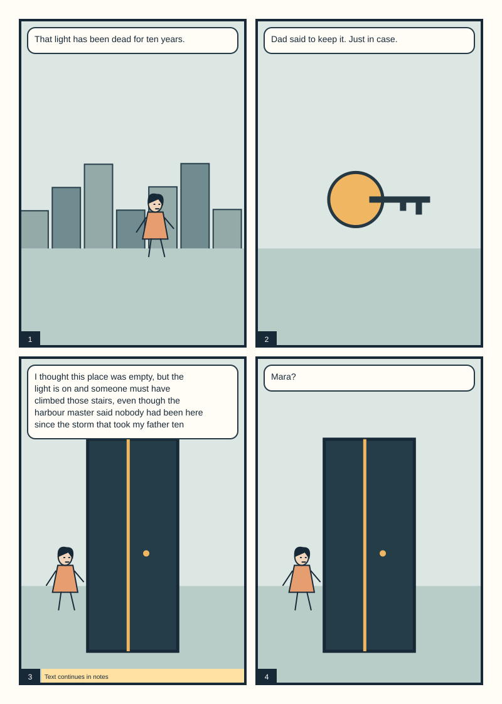
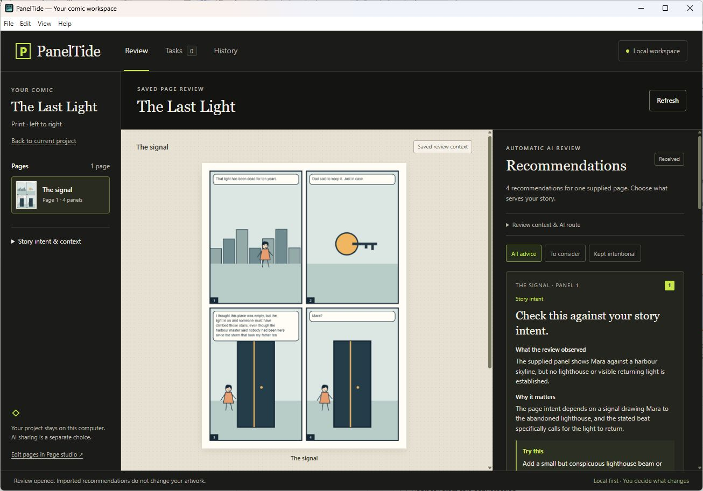

Local workspace. Optional AI sharing. Your decisions.
THE LAST LIGHTOriginal schematic sample

Bring your intent. Review the choices.
For the story you want to tell
Useful feedback starts with your intention.
A page can be quiet, crowded, strange or deliberately difficult. PanelTide asks what you want it to do, then explains specific observations and alternatives. Artistic choices stay yours.
The working loop
Read. Consider. Create.
01
Set the context
Create a comic in Your comics, or a large collection for a whole issue, and import exported PNG pages. Originals are retained locally beside smaller review previews. Add your intent, a script and the story-bible rules that reviews should respect.
02
Ask for a review
Plan a review of chosen pages, scenes, script or canon, or batch-review a large collection. Confirm the exact previews and context before sending to a verified Codex connection or an optional configured route. AI recommendations explain observations, options, uncertainty and any cited sources; keeping an existing choice can be a useful outcome.
03
Choose the next move
Keep a choice intentional, make a task, copy a tool brief, or prepare an optional artwork edit with a crop and mask. Compare saved advice in the managing editor. A supported Photoshop text change has a separate Preview, Apply and guarded Undo.
Why add neighbouring pages?
They can expose transitions, recurring details and setup or payoff. One page cannot establish an unseen character arc. Print page-turn advice also needs spread and parity context. Coverage shows exactly which pages and disciplines a review assessed; whole-story synthesis across batches is still planned.
Inside the editorial workspace
The page and the reasoning, in the same workspace.
Recommendations, personal tasks and saved review history. This historical capture shows the installed 0.8 preview with our original sample. It illustrates the review flow, rather than the new 0.9 comic library, and contains no customer artwork.

AI advice does not change the artwork. A task marked Done is your report, not verified evidence of an edit.
Choose your workflow
Local first. Connected where supported.
Available preview
Windows desktop
Standalone x64 installer or portable app. Comics and large collections with retained PNG sources, scripts and story bibles, planned reviews with coverage, manual work, complete backups and recovery. Data lives in your Windows user profile, independent of the installation folder.
Unsigned preview. Narrow installed and upgrade tests; broader recovery and novice testing are still open.
Development plugin
Adobe Photoshop
UXP panel 0.5.0 for explicit selected text/image exchange and guarded text Preview, Apply and Undo. Installation currently uses Adobe UXP Developer Tools.
API target 24.2. Native evidence covers Photoshop 27.11 on Windows only. Generative-art automation is not connected.
File workflow
Clip Studio Paint
Export original PNGs for Clip Studio Paint, then bring revised pages back with an explicit Replace, Add or Skip choice for each file. Native .clip parsing, layer access and in-app automation are not implemented.
PNG exchange and .paneltide project copies are supported in 0.10. Live testing inside Clip Studio Paint has not been done.
Planned
macOS & more routes
Mac builds, additional AI providers and tested MCP host integrations are on the roadmap. No Mac executable or tested Claude/Gemini integration is offered yet.
AI access, clearly explained
Your subscription is not an API key.
Automatic review currently uses an existing compatible, signed-in Codex CLI through a verified local route. Check it with the app’s original sample before analyzing your own pages. Installation and sign-in remain prerequisites.
Your ChatGPT subscription, separate API billing, Adobe credits and a future PanelTide licence are different things. The preview cannot display your remaining allowance or an exact review cost.
Only the review previews and context you explicitly prepare and send are shared with the selected provider. Retained original PNG sources stay local. AI review uses that provider’s service and data terms.
This is a preview. Code signing, automatic updates, independent editorial evaluation and a production licence are future release gates.
A guide for the actual preview
Every step, with its limits.
The English user guide covers importing pages, choosing context, recommendations, manual editing, Photoshop, Clip Studio exchange, files, recovery and troubleshooting. It covers 0.10.0 in 51 chapters, with the current limits of each area. It is documentation, not a claim that all design concepts are shipped.
Download the Windows installer from this page and follow its wizard, then open PanelTide. In Your comics, create an empty comic and add exported PNG pages, or open the clearly labelled original sample. In Connections, check an existing compatible Codex sign-in with one original PanelTide sample page; this check does not include your comic. When Available appears, select a page, confirm the included context and choose Analyze.
The binaries are unsigned, so Windows may identify an unrecognized publisher. Verify the release and SHA-256 first and make your own security decision. No security setting changes are required by this website.
What if I only have ChatGPT or Claude in a browser?
Use the manual scoped-pack route or configure a supported Codex sign-in. A browser subscription does not automatically authorize APIs or another app’s integrations. Claude Desktop, Gemini and API/local adapters still need separate actual verification before we offer automatic review.
Does it redraw or fix my whole comic?
No. The current app offers scoped editorial advice and manual editing briefs. The supported Photoshop action is a bounded text replacement with preview and undo. The optional edit studio prepares crops, masks and briefs and compares alternatives you make yourself; automatic image generation is not connected.
Where are my files and what can I export?
The Windows app stores data in your user profile at AppData/Roaming/PanelTide/workspace. These files are local and not encrypted by PanelTide. PanelTide keeps separate comics and exact imported PNG originals beside review previews of up to 1600 pixels on the longest edge. Export saved comic downloads a .paneltide file containing saved pages, page order, notes, originals, previews and supplied credits. Opening that file creates a separate comic; review/task history, sign-ins and drawing-app permissions are not included. It is a source project copy, not a complete backup of your workspace. Use Backup and recovery for complete work backups, and keep native Photoshop/Clip Studio originals separately.
Which page files can I import?
New intake accepts static, noninterlaced PNG exports: up to 10 local comics and 30 pages per comic, at most 12 MiB per PNG and 48 MiB of distinct originals per comic. An image can contain up to 24 million pixels. Review previews are separate derivatives, not print masters; each preview dimension must remain at least 100 pixels.
Animated/interlaced PNG and native PSD, PSB or .clip files are unsupported. Earlier valid embedded JPEG references remain readable, but missing originals cannot be reconstructed. This preview does not validate DPI, colour profiles, bleed, fonts or publication readiness.
Can I trust every citation or publish after a review?
A registered source is not proof that it supports a recommendation. Check the claim and its tradition, limitations and relevance. AI interpretations can be wrong. PanelTide does not certify legal clearance, prepress readiness or professional quality, and an empty findings list is valid.
How do I report a problem?
Use the public download repository’s issue form. Include app/plugin version, Windows and Photoshop versions, steps and the visible error. Remove private comic pages, credentials and account information before posting.
Photoshop placement of edit candidates with Preview, Apply and Undo. Independent real-art editorial evaluation. Print and sequence metadata, panel detection and whole-story synthesis. Native Clip Studio, Mac and commercial accounts follow their own evidence gates.
Plans and prices are not announced. Design concepts are requirements, not shipped capabilities.